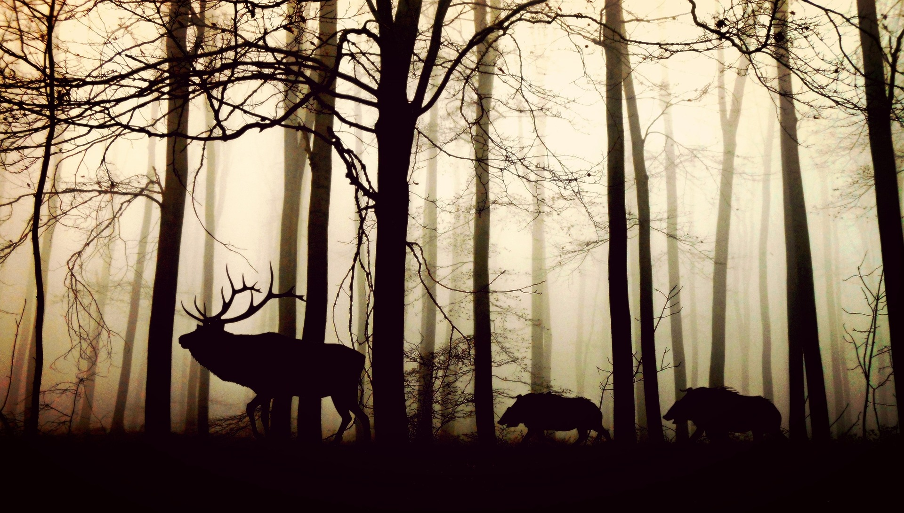

-

生物の絶滅・絶滅危惧種
生物の減少
地球には、何100万種という生物が存在しています。ですが現在では、生物の絶滅する数がだんだん増えているのです。
太古の昔、恐竜の生きていた時代と比べると、恐竜の時代は1年間に0.001種だったのが、現在では、1日に約400種、1年で約4万種が地球上から姿を消しているのです。
絶滅危惧種の生物
現在、最も絶滅に近いと言われているのが、この「アメリカアカオオカミ」です。
絶滅の原因
このオオカミは、今この地球上に、野生で生息している個体が20頭弱、人工飼育下で飼育されている個体が約240頭と、合わせても250頭強ほどの数しかいません。
もちろん、アメリカアカオオカミ以外にも、絶滅危惧種と認定されている生物はたくさんいます。
このまま生物の減少が進めば、今の生態系が壊れて、どうなってしまうのか想像もつきません。
ではなぜ、今この瞬間も生物の減少が進んでいるのでしょうか。
その一番の原因は「人間」です。テレビやニュースなどで、池の中に外来種を逃して、もともと池に住んでいた生物が全滅してしまった。ということを聞いたことがある人は少なくないと思います。これも一つの人間による原因です。
他にも、人間の土地の開発による生物の住処の破壊、乱獲や密猟、地球温暖化や気候変動など、上げていったらキリがありません。人間が「生きやすい世界」を求めてしまった結果、他の生物のほとんどにとって、「生きにくい世界」、少数にとっては、「生きていくことすらままならない世界」が出来上がってしまったのです。 -

砂漠化
砂漠化とは？
砂漠化は文字通り砂漠地域が広がっていくこと、砂漠化対処条約では、「乾燥地域、半乾燥地域、乾燥半湿潤地域における種々の要因(気候の変動及び人間活動を含む。)による土地の劣化」と定義されています。土地の劣化というのはどんな土地でもおきますが、乾燥地帯における土地劣化を砂漠化と呼んでいます。
砂漠化の影響
主な砂漠化の原因となっているものを、様々な観点からまとめました。
環境- 生息地や生物多様性の消失
- 地下水かん養量や水質、土壌肥沃度の低下
- 土壌侵食、砂嵐、砂の侵食、堆積の増加
資源- (放牧地を含む)農業生産の減少
- 生物多様性の消失
- 水不足
保健衛生- 栄養失調と飢餓
- 水による感染症、呼吸系疾患
安全保障- 土地や水資源をめぐる対立
- 突発的な洪水や砂塵等による障害の増加
社会経済- 貧困
- 資源にアクセスできない人々の発生
- 社会経済レジリエンス(回復力、抵抗力)の低下
- 人口移動
地球規模での気候変動、干ばつ、乾燥化などの気候的要因のほかに、乾燥地帯の生態系の許容量を超えて行われる過放牧、過伐採、過耕作などの人為的要因などが挙げられます。 -
土壌劣化
土壌劣化とは？
土壌は食料生産を始めとして、人間や動物の生存に必要なものを提供する重要な天然資源です。土壌は再生能力を持っているため、適切に利用すれば、継続的にその恩恵を享受できます。ですが、現状は人間活動に伴う影響や負荷が土壌の再生能力を超えてしまい、劣化が進んでいます。これを、土壌劣化と言います。
土壌の恩恵
土壌には生物の生命を支えていて、農業生産の基礎としてや、地球の生物多様性にとっても不可欠なものであり、人間を支える穀物や他の植物を生育させる基本的な要素です。では、その土壌が劣化してしまうとどのようなことが起きるのでしょうか。
土壌劣化の影響
地球の陸地面積は、約130億ヘクタールで、現状では、そのうちの15%、つまり、約19億5000万ヘクタールの陸地で土壌劣化の影響を受けてしまっています。土壌劣化は、生物多様性の減少、気候変動といった他の地球環境問題とも深い関連があります。特に、気候変動は、土壌劣化とお互いに影響を及ぼし合い、より悪化してしまうのではないか、ということが指摘されています。
土壌劣化の原因
急速に広がりつつある過放牧などの人為的な問題や、物理的要因の土壌の固化、通気性の悪化、化学的要因の養分過剰、欠乏、生物的要因の土壌中の生物活動の低下による土壌病害虫の増加などが挙げられます。 -

森林破壊
森林破壊の現状
国連の報告によると、2015年以降毎年失われる天然林の面積は、約10万平方キロメートル。これは、東京都と同じくらいの大きさの森が、今も1週間ごとに失われ続けているということです。
森林破壊の原因
急速に進む森林破壊の原因は、さまざまな需要が引き起こす開発。このままの勢いで森林破壊が続けば、今残されている天然林も、遠からず地球上から失われてしまうことになるでしょう。
森林破壊の影響
森林の消失は、多くの野生生物を絶滅の危機に追いやる大きな原因です。絶滅の危機が高いとされる種の数は、1万4,000種以上にものぼります。これらの生きものは、森以外の環境にすむ他の野生生物とも共生の関係や食物連鎖でつながっているため、その絶滅はさらに多くの命の危機にも繋がるのです。 大雨や干ばつなどと言った異常気象にも、森林破壊は深く関わっています。森林を形成している樹木が、生長の過程で、空気中の二酸化炭素を取り込み、大量に蓄えているためです。 火災や伐採によって、その二酸化炭素が、大気中に放出されると、異常気象の大きな原因とされる気候変動（地球温暖化）が助長され、問題が深刻化します。 すみかであった森林を追われた野生生物が、人里などに姿を現し、人との遭遇事故を引き起こす例も多発しています。事故により、人の命が犠牲になることもあれば、希少な野生生物が害獣として殺されてしまうことも珍しくありません。
おさらい問題
選択肢のボタンを押そう
1.現在、1日に約何種の生物が姿を消している？
2.砂漠化の原因は気候的要因のほかに何がある？
3.土壌劣化とお互いに影響し合うことが
指摘されていることとは？
本文の中に答えがあるよ！
(c)2023 MISC J_team.